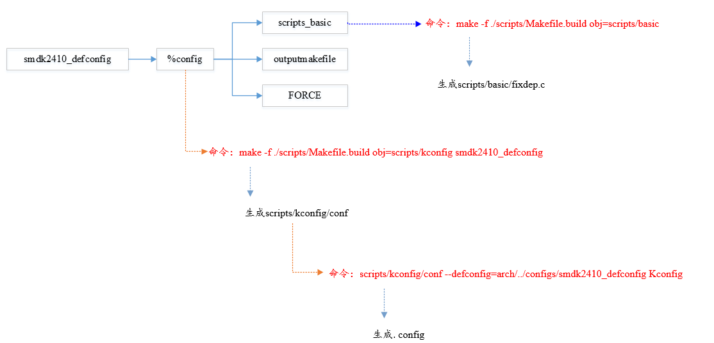
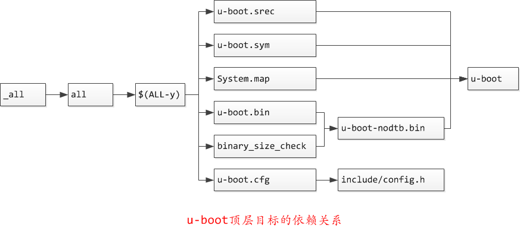
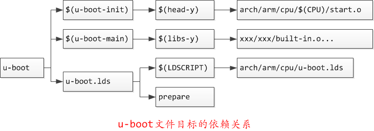
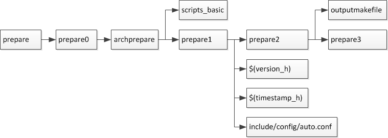
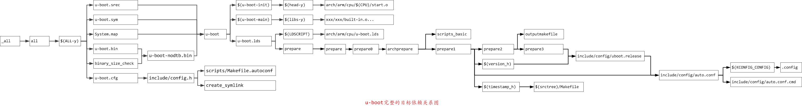

2.1. uboot编译流程分析
u-boot官方在线文档 https://u-boot.readthedocs.io/en/latest/index.html
在分析uboot编译过程之前，必须了解Makefile语法。由于u-boot的Makefile中存在相互调用，这里介绍以下make -f和make -c的区别
-c选项：Makefile中的-c是递归调用子目录的Makefile，-c选项后跟目录，表示到子目录下执行子目录的makefile，顶层Makefile的export的变量还有make默认的变量是可以传递给子目录中的Makefile的
-f选项：顶层Makefile使用make -f调用子目录中的文件（文件名可以随便，不必一定是Makefile)作为Makefile，顶层export的变量可以传递给底层
备注
在顶层Makefile中使用make -f调用子目录中的文件工作目录仍是顶层目录，即CURDIR变量仍是顶层目录
Makefile的核心是依赖和命令，对于每个目标，首先会检查依赖如果依赖存在则执行命令更新目标，如果依赖不存在，则会以依赖为目标先生成依赖，最后执行命令生成目标
2.1.1. make xxx_defconfig配置分析
2.1.1.1. xxx_defconfig依赖检查更新
在编译uboot时首先执行make xxx_defconfig生成.config文件。uboot根目录中Makefile中有唯一的规则目标
config: scripts_basic outputmakefile FORCE
$(Q)$(MAKE) $(build)=scripts/kconfig $@
%config: scripts_basic outputmakefile FORCE
$(Q)$(MAKE) $(build)=scripts/kconfig $@
build 在 scripts/Kbuild.include 中定义
build := -f $(srctree)/scripts/Makefile.build obj
所以最后执行的命令就是
make -f scripts/Makefile.build obj=scripts/kconfig xxx_defconfig
scripts_basic依赖
目标xxx_defconfig的生成依赖于scripts_basic，outputmakefile和FORCE,只有scripts_basic需要执行命令
# Basic helpers built in scripts/
PHONY += scripts_basic
scripts_basic:
$(Q)$(MAKE) $(build)=scripts/basic
$(Q)rm -f .tmp_quiet_recordmcount
#展开后，规则如下
make -f ./scripts/Makefile.build obj=scripts/basic
#make命令会转到文件scripts/Makefile.build去执行
事实上大量实际目标的编译都是调用scripts/Makefile.build完成的，文件scripts/Makefile.build的开头会根据传入的obj=scripts/basic参数设置src=sripts/basic
# Modified for U-Boot
prefix := tpl
src := $(patsubst $(prefix)/%,%,$(obj))
ifeq ($(obj),$(src))
prefix := spl
src := $(patsubst $(prefix)/%,%,$(obj))
ifeq ($(obj),$(src))
prefix := .
endif
endif
kbuild-dir根据src变量(等于obj变量)是绝对路径还是相对路径来确定当前编译的目录，若为绝对路径则该目录即src变量的值，若为相对路径则该变量就是src相对于源码根目录的目录。kbuild-file即 在该目录下查找kbuild文件，若能找到则使用kbuild作为该目录的编译文件，若找不到则使用该目录下的Makefile作为该目录的编译文件，然后将该文件包含进来
# The filename Kbuild has precedence over Makefile
kbuild-dir := $(if $(filter /%,$(src)),$(src),$(srctree)/$(src))
kbuild-file := $(if $(wildcard $(kbuild-dir)/Kbuild),$(kbuild-dir)/Kbuild,$(kbuild-dir)/Makefile)
include $(kbuild-file)
这里展开替换后相当于
include ./scripts/basic/Makefile
文件scripts/basic/Makefile中定义了编译在主机上执行的工具fixdep
# fixdep: Used to generate dependency information during build process
hostprogs-y := fixdep
always := $(hostprogs-y)
# fixdep is needed to compile other host programs
$(addprefix $(obj)/,$(filter-out fixdep,$(always))): $(obj)/fixdep
fixdep用于更新每一个生成目标的依赖文件*.cmd。上面定义的这个$(always)在scripts/Makefile.build里会被添加到targets中
targets += $(extra-y) $(MAKECMDGOALS) $(always)
简而言之，scripts_basic的规则是
scripts_basic:
make -f ./scripts/Makefile.build obj=scripts/basic
最终的结果就是编译scripts/basic/fixdep.c 生成主机上的可执行文件fixdep
outputmakefile依赖
PHONY += outputmakefile
# outputmakefile generates a Makefile in the output directory, if using a
# separate output directory. This allows convenient use of make in the
# output directory.
outputmakefile:
ifneq ($(KBUILD_SRC),)
$(Q)ln -fsn $(srctree) source
$(Q)$(CONFIG_SHELL) $(srctree)/scripts/mkmakefile \
$(srctree) $(objtree) $(VERSION) $(PATCHLEVEL)
endif
如果此时执行 make xxx_defconfig O=out,那么所有生成的目标都将放到out目录，outputmakefile会导出一个makefile到out目录进行编译
FORCE依赖
PHONY += FORCE
FORCE:
FORCE被定义为一个空目标，如果一个目标添加FORCE依赖每次编译都会西安去执行FORCE(实际上什么都不做),然后运行命令更新目标，这样就能确保目标每次都被更新
2.1.1.2. xxx_defconfig目标命令执行
完成对xxx_defconfig的依赖更新后，接下来就是执行对顶层目标的命令完成对xxx_defconfig的更新,也就是执行以下命令
xxx_defconfig: scripts_basic outputmakefile FORCE
make -f ./scripts/Makefile.build obj=scripts/kconfig xxx_defconfig
这个命令会转到srcipts/Makefile.kbuild去执行,文件scripts/Makefile.kbuild的开头会根据传入的obj=scripts/kconfig参数设置src=scripts/kconfig, 然后搜寻$(srctree)/$(src)子目录下的makefile， 由于src=scripts/kconfig参数不用于第一次调用的参数(src=scripts/basic)此处包含的makefile也不用于第一次的makefile了
# The filename Kbuild has precedence over Makefile
kbuild-dir := $(if $(filter /%,$(src)),$(src),$(srctree)/$(src))
kbuild-file := $(if $(wildcard $(kbuild-dir)/Kbuild),$(kbuild-dir)/Kbuild,$(kbuild-dir)/Makefile)
include $(kbuild-file)
这里展开后相当于
include ./scripts/kconfig/Makefile
文件scripts/kconfig/Makefile中定义了所有匹配%config的目标
PHONY += xconfig gconfig menuconfig config syncconfig update-po-config \
%_defconfig: $(obj)/conf
$(Q)$< $(silent) --defconfig=arch/$(SRCARCH)/configs/$@ $(Kconfig)
展开为
xxx_defconfig: scripts/kconfig/conf
scripts/kconfig/conf --defconfig=arch/arm/configs/xxx_defconfig Kconfig
此处xxx_defconfig依赖scripts/kconfig/conf,接下来检查并生成依赖
hostprogs-y := conf nconf mconf kxgettext qconf gconf
conf-objs := conf.o zconf.tab.o
hostprogs-y指出conf被定义为主机上执行的程序，其依赖于另外两个文件 conf.o zconf.tab.o。通过编译conf.c和zconf.tab.c生成conf-objs并链接为scripts/kconfig/conf。生成 依赖后就是执行目标的命令了
conf工具从根目录下开始树状读取默认的kconf文件,分析其配置并保存在内存中，分析完默认的kconfig后再读取指定的文件(arch/arm/configs/xxx_defconfig)更新得到最后的符号表，并输出到.config文件中， 至此完成了make xxx_defconfig执行配置涉及到的所有依赖和命令的分析
make defconfig配置流程简图

2.1.2. make执行流程分析
2.1.2.1. 目标_all和all对$(ALL-y)的依赖
从顶层的Makefile开始查找，找到第一个目标为_all
PHONY := _all
_all:
PHONY += all
ifeq ($(KBUILD_EXTMOD),) ##当我们定义了KBUILD_EXTMOD编译一个外部模块时，_all依赖Modules否则依赖all
_all: all
else
_all: modules
endif
在Makefile中.PHONY后面的target表示也是一个伪造的target，而不是真实存在的文件target，注意makefile的target默认是文件
接着往下分析,all自身依赖于$(ALL-y)
all: $(ALL-y) cfg
ifeq ($(CONFIG_DM_I2C_COMPAT)$(CONFIG_SANDBOX),y)
@echo "===================== WARNING ======================"
@echo "This board uses CONFIG_DM_I2C_COMPAT. Please remove"
@echo "(possibly in a subsequent patch in your series)"
@echo "before sending patches to the mailing list."
@echo "===================================================="
endif
@# Check that this build does not use CONFIG options that we do not
@# know about unless they are in Kconfig. All the existing CONFIG
@# options are whitelisted, so new ones should not be added.
$(call cmd,cfgcheck,u-boot.cfg)
目标$(ALL-y)
# Always append ALL so that arch config.mk's can add custom ones
ALL-y += u-boot.srec u-boot.bin u-boot.sym System.map binary_size_check
ALL-$(CONFIG_ONENAND_U_BOOT) += u-boot-onenand.bin
ifeq ($(CONFIG_SPL_FSL_PBL),y)
ALL-$(CONFIG_RAMBOOT_PBL) += u-boot-with-spl-pbl.bin
else
ifneq ($(CONFIG_SECURE_BOOT), y)
# For Secure Boot The Image needs to be signed and Header must also
# be included. So The image has to be built explicitly
ALL-$(CONFIG_RAMBOOT_PBL) += u-boot.pbl
endif
endif
ALL-$(CONFIG_SPL) += spl/u-boot-spl.bin
ifeq ($(CONFIG_MX6)$(CONFIG_SECURE_BOOT), yy)
ALL-$(CONFIG_SPL_FRAMEWORK) += u-boot-ivt.img
else
ifeq ($(CONFIG_MX7)$(CONFIG_SECURE_BOOT), yy)
ALL-$(CONFIG_SPL_FRAMEWORK) += u-boot-ivt.img
else
ALL-$(CONFIG_SPL_FRAMEWORK) += u-boot.img
endif
endif
ALL-$(CONFIG_TPL) += tpl/u-boot-tpl.bin
ALL-$(CONFIG_OF_SEPARATE) += u-boot.dtb
ifeq ($(CONFIG_SPL_FRAMEWORK),y)
ALL-$(CONFIG_OF_SEPARATE) += u-boot-dtb.img
endif
ALL-$(CONFIG_OF_HOSTFILE) += u-boot.dtb
ifneq ($(CONFIG_SPL_TARGET),)
ALL-$(CONFIG_SPL) += $(CONFIG_SPL_TARGET:"%"=%)
endif
ALL-$(CONFIG_REMAKE_ELF) += u-boot.elf
ALL-$(CONFIG_EFI_APP) += u-boot-app.efi
ALL-$(CONFIG_EFI_STUB) += u-boot-payload.efi
ifneq ($(BUILD_ROM)$(CONFIG_BUILD_ROM),)
ALL-$(CONFIG_X86_RESET_VECTOR) += u-boot.rom
endif
# Build a combined spl + u-boot image for sunxi
ifeq ($(CONFIG_ARCH_SUNXI)$(CONFIG_SPL),yy)
ALL-y += u-boot-sunxi-with-spl.bin
endif
# enable combined SPL/u-boot/dtb rules for tegra
ifeq ($(CONFIG_TEGRA)$(CONFIG_SPL),yy)
ALL-y += u-boot-tegra.bin u-boot-nodtb-tegra.bin
ALL-$(CONFIG_OF_SEPARATE) += u-boot-dtb-tegra.bin
endif
# Add optional build target if defined in board/cpu/soc headers
ifneq ($(CONFIG_BUILD_TARGET),)
ALL-y += $(CONFIG_BUILD_TARGET:"%"=%)
endif
ifneq ($(CONFIG_SYS_INIT_SP_BSS_OFFSET),)
ALL-y += init_sp_bss_offset_check
endif
以上的$(ALL-y)目标中看起来很复杂，但除了第一行的通用目标外，其他目标都是在特殊条件下才会生成，这里暂时不提
$(ALL-y)依赖u-boot.srec
u-boot.hex u-boot.srec: u-boot FORCE
$(call if_changed,objcopy)
$(ALL-y)依赖u-boot.bin
ifeq ($(CONFIG_MULTI_DTB_FIT),y)
fit-dtb.blob: dts/dt.dtb FORCE
$(call if_changed,mkimage)
MKIMAGEFLAGS_fit-dtb.blob = -f auto -A $(ARCH) -T firmware -C none -O u-boot \
-a 0 -e 0 -E \
$(patsubst %,-b arch/$(ARCH)/dts/%.dtb,$(subst ",,$(CONFIG_OF_LIST))) -d /dev/null
u-boot-fit-dtb.bin: u-boot-nodtb.bin fit-dtb.blob
$(call if_changed,cat)
u-boot.bin: u-boot-fit-dtb.bin FORCE
$(call if_changed,copy)
else ifeq ($(CONFIG_OF_SEPARATE),y)
u-boot-dtb.bin: u-boot-nodtb.bin dts/dt.dtb FORCE
$(call if_changed,cat)
u-boot.bin: u-boot-dtb.bin FORCE
$(call if_changed,copy)
else
u-boot.bin: u-boot-nodtb.bin FORCE
$(call if_changed,copy)
endif
如果打开了device tree的支持，则有依赖关系
u-boot.bin---->u-boot-dtb.bin----->u-boot-nodtb.bin + dts/dt.dtb
如果没有定义CONFIG_OF_SEPARATE则依赖关系如下
u-boot.bin ----> u-boot-nodtb.bin
u-boot-nodtb.bin的依赖关系以及执行命令如下
u-boot-nodtb.bin: u-boot FORCE
$(call if_changed,objcopy)
$(call DO_STATIC_RELA,$<,$@,$(CONFIG_SYS_TEXT_BASE))
$(BOARD_SIZE_CHECK)
命令中if_changed函数定义在scripts/Kbuild.include文件中,顶层Makefile中通过以下命令包含
scripts/Kbuild.include: ;
include scripts/Kbuild.include
if_changed函数定义如下
if_changed = $(if $(strip $(any-prereq) $(arg-check)), \
@set -e; \
$(echo-cmd) $(cmd_$(1)); \
printf '%s\n' 'cmd_$@ := $(make-cmd)' > $(dot-target).cmd)
该命令外层是一个if函数，然后又内嵌了一个strip函数
OBJCOPY = $(CROSS_COMPILE)objcopy
# Normally we fill empty space with 0xff
quiet_cmd_objcopy = OBJCOPY $@
cmd_objcopy = $(OBJCOPY) --gap-fill=0xff $(OBJCOPYFLAGS) \
$(OBJCOPYFLAGS_$(@F)) $< $@
所以$(call if_changed,objcopy)展开后：
echo objcopy $@; objcopy $< $@
就是说利用objcopy命令将u-boot转换为u-boot-nodtb.bin
$(ALL-y)依赖u-boot.sym
u-boot.sym: u-boot FORCE
$(call if_changed,sym)
$(ALL-y)依赖System.map
System.map: u-boot
@$(call SYSTEM_MAP,$<) > $@
$(ALL-y)依赖u-boot.cfg
u-boot.cfg spl/u-boot.cfg tpl/u-boot.cfg: include/config.h FORCE
$(Q)$(MAKE) -f $(srctree)/scripts/Makefile.autoconf $(@)
include/config.h在make xxx_defconfig时创建,include/config.h文件中会包含板级配置文件如#include <configs/holo_ark_v3.h>
$(ALL-y)依赖binary_size_check
binary_size_check: u-boot-nodtb.bin FORCE
@file_size=$(shell wc -c u-boot-nodtb.bin | awk '{print $$1}') ; \
map_size=$(shell cat u-boot.map | \
awk '/_image_copy_start/ {start = $$1} /_image_binary_end/ {end = $$1} END {if (start != "" && end != "") print "ibase=16; " toupper(end) " - " toupper(start)}' \
| sed 's/0X//g' \
| bc); \
if [ "" != "$$map_size" ]; then \
if test $$map_size -ne $$file_size; then \
echo "u-boot.map shows a binary size of $$map_size" >&2 ; \
echo " but u-boot-nodtb.bin shows $$file_size" >&2 ; \
exit 1; \
fi \
fi
以上通用目标$(ALL-y)的依赖有一个共同点，除了u-boot.cfg依赖于include/config.h外其余目标都依赖于u-boot, 以下图中表示了_all依赖简图

2.1.2.2. u-boot目标编译
u-boot目标依赖及执行命令如下
u-boot: $(u-boot-init) $(u-boot-main) u-boot.lds FORCE
+$(call if_changed,u-boot__)
ifeq ($(CONFIG_KALLSYMS),y)
$(call cmd,smap)
$(call cmd,u-boot__) common/system_map.o
endif
其中u-boot-init和u-boot-main被定义为
u-boot-init := $(head-y)
u-boot-main := $(libs-y)
依赖项head-y libs-y
head-y 在arch/arm/Makefile中定义
head-y := arch/arm/cpu/$(CPU)/start.o
所以head-y指的是start.S
在顶层目录Makefile中搜索libs-y可以发现其包含许多目录，
libs-y += lib/
libs-$(HAVE_VENDOR_COMMON_LIB) += board/$(VENDOR)/common/
libs-$(CONFIG_OF_EMBED) += dts/
libs-y += fs/
libs-y += net/
libs-y += disk/
libs-y += drivers/
libs-y += drivers/dma/
libs-y += drivers/gpio/
libs-y += drivers/i2c/
libs-y += drivers/net/
libs-y += drivers/net/phy/
libs-y += drivers/pci/
libs-y += drivers/power/ \
drivers/power/domain/ \
drivers/power/fuel_gauge/ \
drivers/power/mfd/ \
drivers/power/pmic/ \
drivers/power/battery/ \
drivers/power/regulator/
libs-y += drivers/spi/
libs-$(CONFIG_FMAN_ENET) += drivers/net/fm/
libs-$(CONFIG_SYS_FSL_DDR) += drivers/ddr/fsl/
libs-$(CONFIG_SYS_FSL_MMDC) += drivers/ddr/fsl/
libs-$(CONFIG_ALTERA_SDRAM) += drivers/ddr/altera/
libs-y += drivers/serial/
libs-y += drivers/usb/dwc3/
libs-y += drivers/usb/common/
libs-y += drivers/usb/emul/
libs-y += drivers/usb/eth/
libs-y += drivers/usb/gadget/
libs-y += drivers/usb/gadget/udc/
libs-y += drivers/usb/host/
libs-y += drivers/usb/musb/
libs-y += drivers/usb/musb-new/
libs-y += drivers/usb/phy/
libs-y += drivers/usb/ulpi/
libs-y += cmd/
libs-y += common/
libs-y += env/
libs-$(CONFIG_API) += api/
libs-$(CONFIG_HAS_POST) += post/
libs-y += test/
libs-y += test/dm/
libs-$(CONFIG_UT_ENV) += test/env/
libs-$(CONFIG_UT_OVERLAY) += test/overlay/
另外libs-y还有如下规则定义
libs-y += $(if $(BOARDDIR),board/$(BOARDDIR)/)
libs-y := $(sort $(libs-y))
libs-y := $(patsubst %/, %/built-in.o, $(libs-y))
这条规则使得libs-y中的每个条目的最后一个斜杠替换成/built-in.o，可见libs-y被定义为各层驱动目录下built-in.o的集合，而这些built-in.o则由kbuild makefile将obj-y所
包含的各个文件编译而成，具体可以研究 scripts/Kbuild.include 和 scripts/Makefile.build
ifneq ($(strip $(obj-y) $(obj-m) $(obj-) $(subdir-m) $(lib-target)),)
builtin-target := $(obj)/built-in.o
endif
$(builtin-target): $(obj-y) FORCE
$(call if_changed,link_o_target)
u-boot文件目标依赖：

依赖项u-boot.lds
u-boot.lds: $(LDSCRIPT) prepare FORCE
$(call if_changed_dep,cpp_lds)
ifndef LDSCRIPT
#LDSCRIPT := $(srctree)/board/$(BOARDDIR)/u-boot.lds.debug
ifdef CONFIG_SYS_LDSCRIPT
# need to strip off double quotes
LDSCRIPT := $(srctree)/$(CONFIG_SYS_LDSCRIPT:"%"=%)
endif
endif
# If there is no specified link script, we look in a number of places for it
ifndef LDSCRIPT
ifeq ($(wildcard $(LDSCRIPT)),)
LDSCRIPT := $(srctree)/board/$(BOARDDIR)/u-boot.lds
endif
ifeq ($(wildcard $(LDSCRIPT)),)
LDSCRIPT := $(srctree)/$(CPUDIR)/u-boot.lds
endif
ifeq ($(wildcard $(LDSCRIPT)),)
LDSCRIPT := $(srctree)/arch/$(ARCH)/cpu/u-boot.lds
endif
endif
如果没有定义LDSCRIPT和CONFIG_SYS_LDSCRIPT则默认使用u-boot自带的lds文件，包括board/$(BOARDDIR)和$(CPUDIR)目录下定制的针对board或cpu的lds文件，如果没有定制的lds文件则采用 arch/arm/cpu目录下默认的lds链接文件u-boot.lds
2.1.2.2.1. prepare编译
实际上prepare是一些列prepare伪目标和动作的组合，完成编译前的准备工作
# Listed in dependency order
PHONY += prepare archprepare prepare0 prepare1 prepare2 prepare3
prepare3: include/config/uboot.release
ifneq ($(KBUILD_SRC),)
@$(kecho) ' Using $(srctree) as source for U-Boot'
$(Q)if [ -f $(srctree)/.config -o -d $(srctree)/include/config ]; then \
echo >&2 " $(srctree) is not clean, please run 'make mrproper'"; \
echo >&2 " in the '$(srctree)' directory.";\
/bin/false; \
fi;
endif
# prepare2 creates a makefile if using a separate output directory
prepare2: prepare3 outputmakefile
prepare1: prepare2 $(version_h) $(timestamp_h) \
include/config/auto.conf
archprepare: prepare1 scripts_basic
prepare0: archprepare FORCE
$(Q)$(MAKE) $(build)=.
# All the preparing..
prepare: prepare0
各个prepare目标的依赖关系如下

在prepare1的依赖列表中，除了include/config/auto.conf之外，还有$(version_h)和$(timestamp_h),他们的依赖关系如下
$(version_h): include/config/uboot.release FORCE
$(call filechk,version.h)
$(timestamp_h): $(srctree)/Makefile FORCE
$(call filechk,timestamp.h)
对于位于最后的prepare3的依赖include/config/uboot.release它还有下级依赖
include/config/uboot.release: include/config/auto.conf FORCE
$(call filechk,uboot.release)
对于include/config/auto.conf，Makefile还有一个匹配规则
include/config/%.conf: $(KCONFIG_CONFIG) include/config/auto.conf.cmd
$(Q)$(MAKE) -f $(srctree)/Makefile syncconfig
@# If the following part fails, include/config/auto.conf should be
@# deleted so "make silentoldconfig" will be re-run on the next build.
$(Q)$(MAKE) -f $(srctree)/scripts/Makefile.autoconf || \
{ rm -f include/config/auto.conf; false; }
@# include/config.h has been updated after "make silentoldconfig".
@# We need to touch include/config/auto.conf so it gets newer
@# than include/config.h.
@# Otherwise, 'make silentoldconfig' would be invoked twice.
$(Q)touch include/config/auto.conf
include/config/auto.conf依赖于$(KCONFIG_CONFIG)和include/config/auto.conf.cmd，其中： - $(KCONFIG_CONFIG)实际上就是.config文件 - include/config/auto.conf.cmd是由fixdep在编译时生成的依赖文件
make编译流程图

完成目标依赖分析后，剩下的就是基于完整的目标依赖关系图，从最底层的依赖开始，逐行运行命令生成目标，直到生成顶层目标
补充 —- config.h文件生成
此处进行函数定义
##scripts/Kbuild.include文件中
define filchk
$(Q)set -e; \
$(kecho) ' CHK $@'; \
mkdir -p $(dir $@); \
$(filechk_$(1)) < $< > $@.tmp; \
if [ -r $@ ] && cmp -s $@ $@.tmp; then \
rm -f $@.tmp; \
else \
$(kecho) ' UPD $@'; \
mv -f $@.tmp $@; \
fi
endef
具体的文件生成则在以下文件中实现
# scripts/Makefile.autoconf文件中
# Prior to Kconfig, it was generated by mkconfig. Now it is created here.
define filechk_config_h
(echo "/* Automatically generated - do not edit */"; \
for i in $$(echo $(CONFIG_SYS_EXTRA_OPTIONS) | sed 's/,/ /g'); do \
echo \#define CONFIG_$$i \
| sed '/=/ {s/=/ /;q; } ; { s/$$/ 1/; }'; \
done; \
echo \#define CONFIG_BOARDDIR board/$(if $(VENDOR),$(VENDOR)/)$(BOARD);\
echo \#include \<config_defaults.h\>; \
echo \#include \<config_uncmd_spl.h\>; \
echo \#include \<configs/$(CONFIG_SYS_CONFIG_NAME).h\>; \
echo \#include \<asm/config.h\>; \
echo \#include \<linux/kconfig.h\>; \
echo \#include \<config_fallbacks.h\>;)
endef
include/config.h: scripts/Makefile.autoconf create_symlink FORCE
$(call filechk,config_h)
u-boot.cfg: include/config.h FORCE
$(call cmd,u_boot_cfg)
spl/u-boot.cfg: include/config.h FORCE
$(Q)mkdir -p $(dir $@)
$(call cmd,u_boot_cfg,-DCONFIG_SPL_BUILD)
tpl/u-boot.cfg: include/config.h FORCE
$(Q)mkdir -p $(dir $@)
$(call cmd,u_boot_cfg,-DCONFIG_SPL_BUILD -DCONFIG_TPL_BUILD)
include/autoconf.mk: u-boot.cfg
$(call cmd,autoconf)